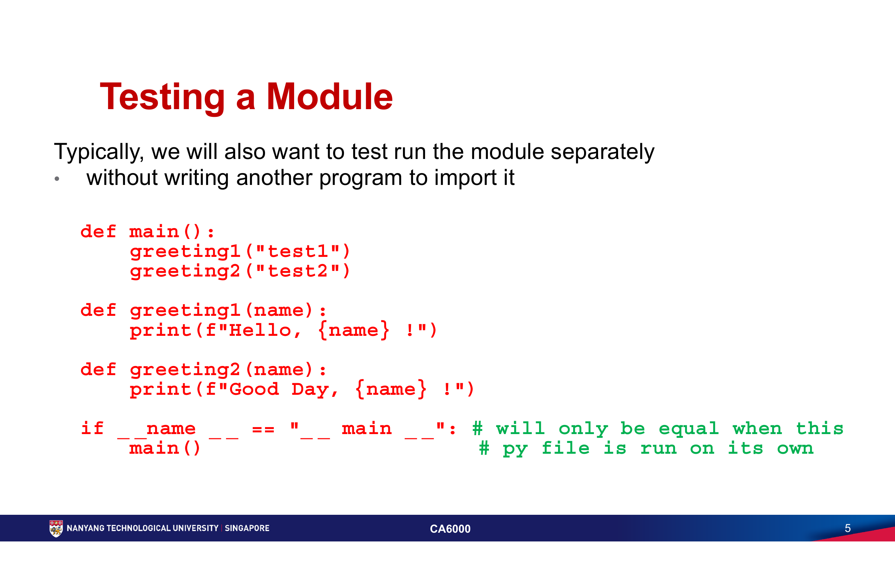
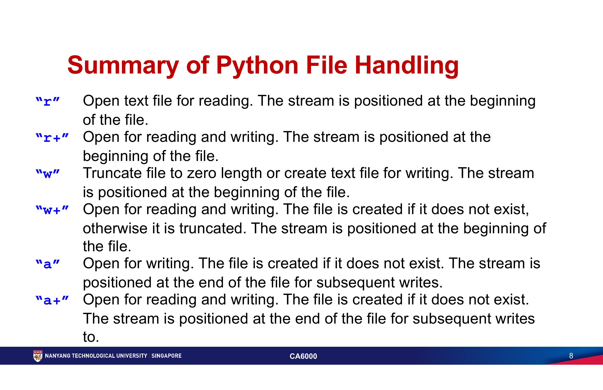
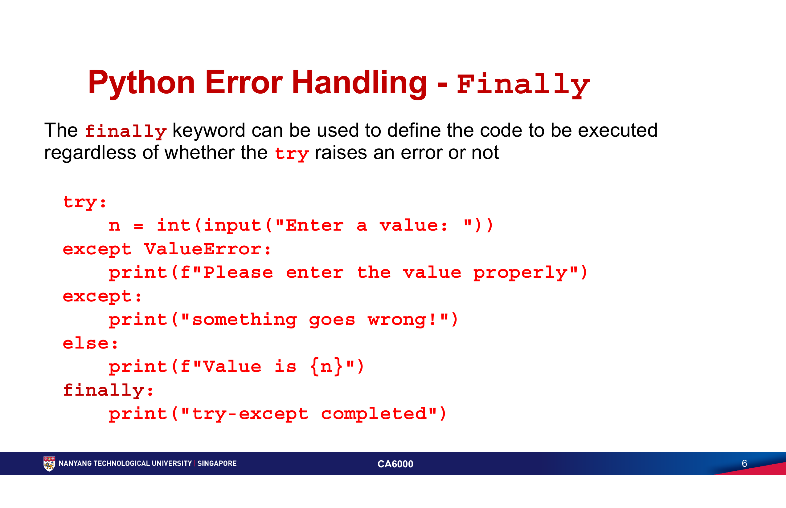
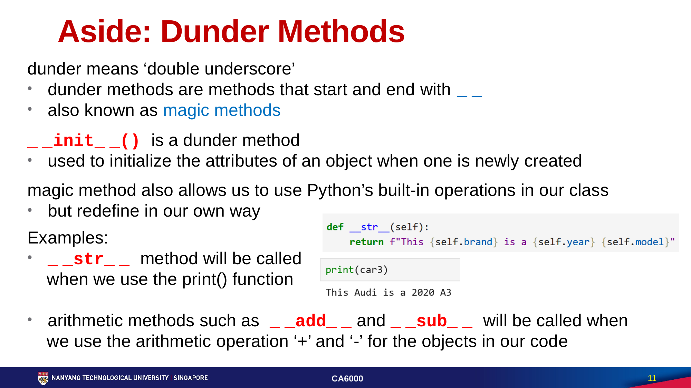

第二周：代码组织、数据文件与对象
这一周把单文件脚本推进为可维护的 Python 程序：用模块组织代码、用文件保存与交换数据、用异常处理失败路径，并用类封装可复用的对象行为。
else 与 finally 组织失败路径；定义类、实例、方法和继承关系。
必须掌握的术语
| 术语 | 准确理解 |
|---|---|
| module / package / library | module 是可导入的 Python 文件；package 是模块的集合；library 是面向某类功能的一组可复用代码，可能包含多个 package。 |
| import / alias | import 让程序使用其他模块；alias 是用 as 给导入名取的局部别名。 |
__name__ == "__main__" | 仅当文件被直接运行时为真；用于保留模块的自测入口，避免在被导入时执行测试代码。 |
| file mode | r 读、w 写并截断、a 追加；带 + 的模式同时允许读写。模式决定文件指针位置与是否可能覆盖旧内容。 |
| context manager | with open(...) 创建的管理上下文；代码离开区块后文件会自动关闭并写回缓冲区。 |
| CSV / JSON | CSV 用行和列保存表格数据；JSON 用对象和数组保存有命名结构的数据。两者都常用于数据交换。 |
| exception | 运行时发生、可被捕获处理的异常对象，如 ValueError、KeyError 与 FileNotFoundError。 |
| assert | 开发期断言：条件为假时抛出 AssertionError，用于表达程序不应被破坏的前提或结果。 |
| class / instance | class 是创建对象的蓝图；instance 是按蓝图实际创建出来的对象。 |
| attribute / method | attribute 是对象保存的状态；method 是定义在类中、通过对象调用的函数。 |
self | 实例方法的第一个参数，用来访问当前对象自身的属性和其他方法。 |
| dunder method | 双下划线方法，如 __init__、__str__、__add__；Python 在创建、打印或运算对象时会调用它们。 |
| inheritance / superclass / subclass | 子类继承父类的共同状态和行为；父类也称 superclass，子类也称 subclass。 |
核心知识
Topic 4 · Modules and Packages｜把代码拆成可复用单元
本章代码 / 工具：标准库 time、random、re；自定义 module；pip / conda 安装第三方 package。
模块让函数和对象不必堆在一个文件里。导入整个模块时保留命名空间，调用形式清晰；只导入需要的名称时，代码更短，但要避免把来源隐藏得难以追踪。
import random
for _ in range(3):
print(random.choice(["red", "green", "blue"]))
# 只导入一个名称，并给它取别名
from random import choice as choose_color
print(choose_color(["red", "green", "blue"]))
自定义模块就是放有函数定义的 .py 文件。把自测代码放在 __name__ == "__main__" 条件内：直接运行该文件时测试会执行，其他程序 import 它时则只获得函数。
# greeting.py
def greeting(name):
return f"Hello, {name}!"
if __name__ == "__main__":
print(greeting("test"))
# app.py
import greeting
print(greeting.greeting("Nick"))

re 是标准库中的正则表达式模块，可用模式搜索字符串。它适合验证格式，但验证规则必须说明边界；例如密码规则只检查字符组成，不等于判断密码是否安全。
from re import search
def has_digit(text):
return bool(search(r"[0-9]", text))
Topic 6 · File I/O｜让程序可靠读写文件
本章代码 / 格式：open()、read()、readline()、write()；文本模式、CSV 的 reader / DictReader 与 JSON 的 loads()。
文件 I/O 的第一件事是明确模式：r 从开头读取，w 会清空已有文件后写入，a 从末尾追加。只要不希望覆盖已有内容，就不要凭习惯使用 w。
| 模式 | 作用 | 风险 / 用途 |
|---|---|---|
r / r+ | 读取；r+ 同时可写。 | 文件必须存在；指针位于开头。 |
w / w+ | 写入；不存在时创建。 | 已有文件会被截断为零长度。 |
a / a+ | 追加；不存在时创建。 | 指针位于末尾，适合日志和追加记录。 |
from pathlib import Path
path = Path("notes.txt")
with path.open("a", encoding="utf-8") as file:
file.write("completed topic 6\n")
with path.open("r", encoding="utf-8") as file:
for line in file:
print(line.rstrip())
with 不是装饰：它让文件在读取、写入或发生异常后都能关闭，并把缓冲区内容写回磁盘。CSV 的首行通常是 header；DictReader 将每一行变为“列名 → 字符串值”的字典。JSON 则更适合保留嵌套的 name-value 结构。
import csv
import json
with open("cars.csv", newline="", encoding="utf-8") as file:
for row in csv.DictReader(file):
print(row["brand"], row["year"])
record = json.loads('{"brand": "Mazda", "year": 2014}')
print(record["brand"])

Topic 7 · Error Handling｜把失败路径设计进程序
本章代码 / 工具：try、具体 except、else、finally、assert；time.perf_counter() 与 time.process_time() 性能测量。
语法错误让程序无法启动；运行期异常发生在执行过程中。异常处理的目标不是静默吞掉失败，而是把预计会失败的边界放在最小的 try 区块内，并针对可理解的异常给出下一步。
try:
number = int(input("Enter a value: "))
except ValueError:
print("Please enter an integer.")
else:
print(f"Value is {number}")
finally:
print("Input attempt completed.")
else 只在没有异常时运行；finally 无论成功或失败都会运行，适合清理资源。优先捕获 ValueError、KeyError、FileNotFoundError 等具体异常；宽泛的 except: 会把真正的编程错误也伪装成“已处理”。

else，收尾工作放在 finally。来源：CA6000 Topic 7 Error Handling，Slide 6
def divide(x, y):
assert y != 0, "y must not be zero"
return x / y
assert divide(10, 5) == 2
assert 用于开发期检查不变量和函数结果，不应用来处理用户可预期的输入错误。课件还介绍 profiling：time.perf_counter() 测量经过的真实时间，time.process_time() 测量当前进程实际消耗的 CPU 时间；它们用于定位瓶颈，而不是猜测哪里慢。
Topic 10 · Python Class｜让状态和行为成为一个对象
本章代码 / 方法：class、instance、instance / class attributes、instance methods、封装、dunder methods、abstraction 与 inheritance。
类是自定义数据结构的蓝图，实例是按蓝图创建的具体对象。__init__ 在对象创建时初始化实例属性；self 指向正在使用的那个实例。类属性属于所有实例共享的类，实例属性则可各不相同。
class Car:
wheels = 4 # class attribute
def __init__(self, brand, model):
self.brand = brand # instance attribute
self.model = model
def label(self):
return f"{self.brand} {self.model}"
car = Car("Audi", "A3")
print(car.label())
将属性放进对象能让相关数据和行为一起演化。单下划线属性（如 _budget）是“请勿直接使用”的约定；双下划线会触发名称改写，但都不是安全边界。封装真正的价值是只暴露稳定接口，让内部实现可以改变。
class Vector:
def __init__(self, x, y):
self.x = x
self.y = y
def __add__(self, other):
return Vector(self.x + other.x, self.y + other.y)
def __str__(self):
return f"Vector({self.x}, {self.y})"
print(Vector(1, 2) + Vector(3, 4))

class Rectangle:
def __init__(self, width, height):
self.width = width
self.height = height
def area(self):
return self.width * self.height
class Square(Rectangle):
def __init__(self, side):
super().__init__(side, side)
抽象让使用者调用 area() 而不必知道内部计算；继承把通用行为放在 superclass，由 subclass 复用。只有“是一个”的稳定关系才用继承；仅仅想复用一小段功能时，组合通常更清晰。
常见错误
- 用
from module import *或过短别名掩盖函数来源，导致命名冲突难以排查。 - 把模块自测代码放在顶层，导致其他程序一导入就执行副作用。
- 用
w打开已有文件却没有意识到它会清空原内容；或不使用with而遗漏close()。 - 把 CSV 的全部字段都当成数值；
DictReader读出的值默认是字符串。 - 用宽泛
except:吞掉所有异常，或把正常成功路径塞进try。 - 把
assert当成用户输入验证或生产期权限控制。 - 遗漏实例方法的
self，或把应属于单个对象的状态错放到类属性上。 - 把单下划线或双下划线误当成真正的安全加密；它们只表达封装约定或名称改写。
- 为了复用代码建立层级很深的继承树，使行为来源难以理解。
练习
- 创建一个
validators.py，实现has_digit(text)与has_uppercase(text)。 - 添加
__main__自测入口；从另一个文件导入它，并确认自测不会被执行。
- 用
with将三条学习记录追加到 CSV 或 JSON 文件。 - 重新读取文件，明确转换需要是数值的字段，并为文件不存在设计
FileNotFoundError分支。
- 按课件思路实现
ShoppingAgent：保存 budget 和 cart，提供add_to_cart(item, price)。 - 当价格超过余额时不改变状态；为关键前提写一条
assert，并解释为什么它不能替代用户提示。